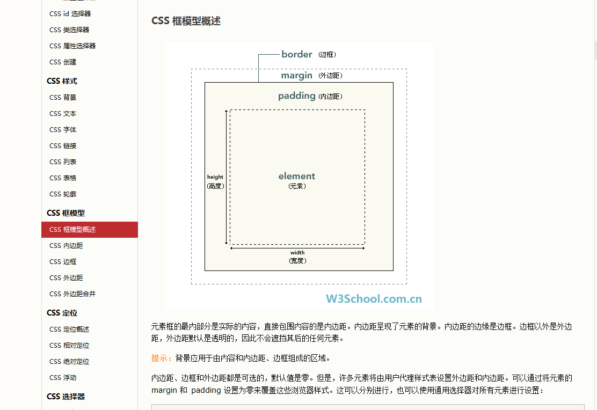

<!DOCTYPE html>
<html lang="en">
<head>
    <meta charset="UTF-8">
    <title>盒子模型</title>
    <style type="text/css">
        .box{
            /*
                这里width和height设置的是內容区的宽和高
                一个盒子的可见框大小 = 内容区+内边距+边框大小
            */
            width:100px;
            height: 100px;
            background-color: #dfa020;

            /*
                为元素设置边框必须设置三个元素，缺一个边框无法显示.大部分浏览器中，边框的宽度和颜色
                都有默认值，边框样式默认值是none，所以只设置border-style，边框也能出来，因为有默认值
                border-width:边框的宽度
                border-color:边框颜色
                border-style:边框的样式

                border-width也可以分别指定4个边框的不同宽度
                如果给定4个值：上 右 下 左   顺时针
                如果给定3个值： 则三个值分别给  上 左右 下
                如果给定2个值： 则两个值分别给  上下 左右

                除了border-width，还提供了border-xxx-width: xxx可以是top bottom left right。
                用来设置某一边的宽度

                border-color和border-style类似border-width，也可以分别指定
            */
            /*border-width: 10px;*/
            border-width: 10px 20px 30px 40px;
            border-color: red blue yellow aqua;
            /*
                none 定义无边框。
                hidden 与 "none" 相同。不过应用于表时除外，对于表，hidden 用于解决边框冲突。
                dotted 定义点状边框。在大多数浏览器中呈现为实线。
                dashed 定义虚线。在大多数浏览器中呈现为实线。
                solid 定义实线。
                double 定义双线。双线的宽度等于 border-width 的值。
                groove 定义 3D 凹槽边框。其效果取决于 border-color 的值。
                ridge 定义 3D 垄状边框。其效果取决于 border-color 的值。
                inset 定义 3D inset 边框。其效果取决于 border-color 的值。
                outset 定义 3D outset 边框。其效果取决于 border-color 的值。
                inherit 规定应该从父元素继承边框样式。
            */
            border-style: solid;
        }

        .box1{
            /*
                使用border来简写border边框设置，可以同时设置边框宽度、颜色、样式
                不用和上面一样分开指定，但是只能同时指定4个变的样式，不能分开设置
                同样提供了border-xxx，可以单独设置4个变的样式  xxx:同样是top,left,right,bottom
            */
            border: 10px green solid;
            width:100px;
            height: 100px;
            background-color: #dfa020;
        }

        .box2{
            border: 10px green solid;
            width:100px;
            height: 100px;
            background-color: #dfa020;

            /*
                内边距：盒子的内容区和边框之间的间距  padding
                padding-xxx  xxx：同样是top left right bottom
                内边距会自动应用元素的背景色
            */
            /*padding-top: 50px;*/
            /*padding-left: 50px;*/
            /*padding-right: 50px;*/
            /*padding-bottom: 50px;*/

            /*
            类似于border,padding也可以使用padding简写padding-xxx
             */
            padding: 30px;
        }

        .box3{
            width: 100%;
            height: 100%;
            background-color: #00BE67;
        }

        /*
            外边距是盒子和盒子之间的间距，不会影响盒子的大小，但会影响盒子的位置
            margin-top,margin-left,margin-bottom,margin-right
            因为浏览器中元素都是靠左靠上显示的，所以：
            注意：如果设置了上和左的外边距会改变自己的位置，如果设置了下和右的外边距
            会改变相邻盒子的位置

            外边距也可以设置为负值，元素会向反方向移动
            margin还可以设置为auto，auto一般只能给水平方向设置，既 margin-left和margin-right
            一边被设置为auto，则该边外边距被设置为最大值
            垂直方向，即top和bottom设置了auto也无效

            外边距同样可以简写为margin
            eg:margin:10px 20px 30px 40px
        */
        .box4{
            width:100px;
            height: 100px;
            background-color: #E04141;
            border: 10px green solid;
            margin-top: 100px;
            margin-left: 100px;
            margin-bottom: 100px;
        }
        .box5{
            width:100px;
            height: 100px;
            background-color: #E04141;
            border: 10px green solid;
        }

        /*
            在网页中，垂直方向的相邻外边距，会发生外边距的重叠。
            如，box6和box7的相邻外边距6下和7上是相邻的外边距，会取两者中的最大值来显示，而不是求和
            关键点：垂直方向 ，相邻外边距
        */
        .box6{
            width:100px;
            height: 100px;
            background-color: green;
            margin-bottom: 100px;
        }
        .box7{
            width:100px;
            height: 100px;
            background-color: red;
            margin-top: 150px;
        }

        /*
            如果父子元素的垂直外边距相邻，则子元素的外边距会设置给父元素
            如何避免这种情况
            ①打破相邻条件
                给父元素设置一个任意元素  eg:border,padding等在外边距里面的属性，那么父子元素的外边距不在相邻
            ②不使用margin，而是使用父元素的内边距将子元素挤到固定位置
            eg:padding-top:100px,父元素的height改为100px，否则父元素可见框变大
        */
        .box8{
            width:200px;
            height: 199px;
            background-color: red;
            padding-top:1px;
            /*height:100px;*/
            /*padding-top: 100px;*/
        }
        .box9{
            width:100px;
            height: 100px;
            background-color: green;
            margin-top: 100px;
        }
    </style>
</head>
<body>
    <!--<div>
        <label>w3School盒模型(框模型)截图：</label> <br>
        
    </div>-->

    <div class="box"></div>
    <div class="box1"></div>
    <div class="box2">
        <div class="box3"></div>
    </div>
    <div class="box4"></div>
    <div class="box5"></div>
    <div class="box6"></div>
    <div class="box7"></div>

    <div class="box8">
        <div class="box9"></div>
    </div>
</body>
</html>